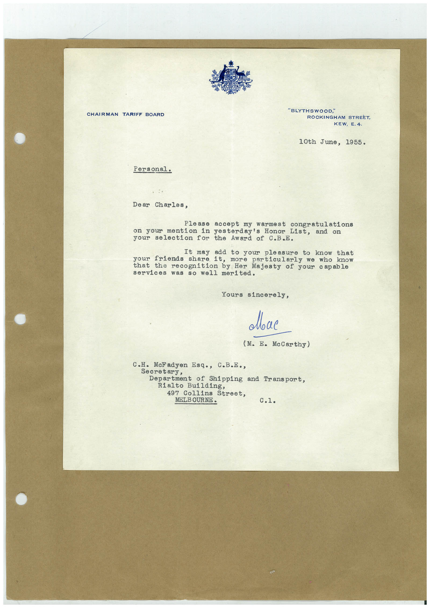

Book 1 · scan 111


Description
Transcription
Context
Review notes
Compare the machine draft with the scan. Handwriting and names need human review.
Artifacts
Edit the artifacts field in this note’s frontmatter to change these records. This summary is generated.
B01-S111-A01 — Letter — Book 1, scan 111
Types: Typed document, Letter
Scope: Whole scanned page; individual items can be split out during review.
Caption: Not mapped yet.
Caption source: Not recorded yet.
Caption status: unmapped
Machine transcription
CHAIRMAN TARIFF BOARD "BLYTHSWOOD," ROCKINGHAM STREET, KEW, E. 4. 10th June, 1955. Personal. Dear Charles, Please accept my warmest congratulations on your mention in yesterday's Honor List, and on your selection for the Award of C.B.E. your It may add to your pleasure to know that friends share it, more particularly we who know that recognition by Her Majesty of your capable services was so well merited. Yours sincerely, Лвас (M. E. McCarthy) C.H. McFadyen Esq., C.B.E., Secretary, Department of Shipping and Transport, Rialto Building, 497 Collins Street, MELBOURNE.